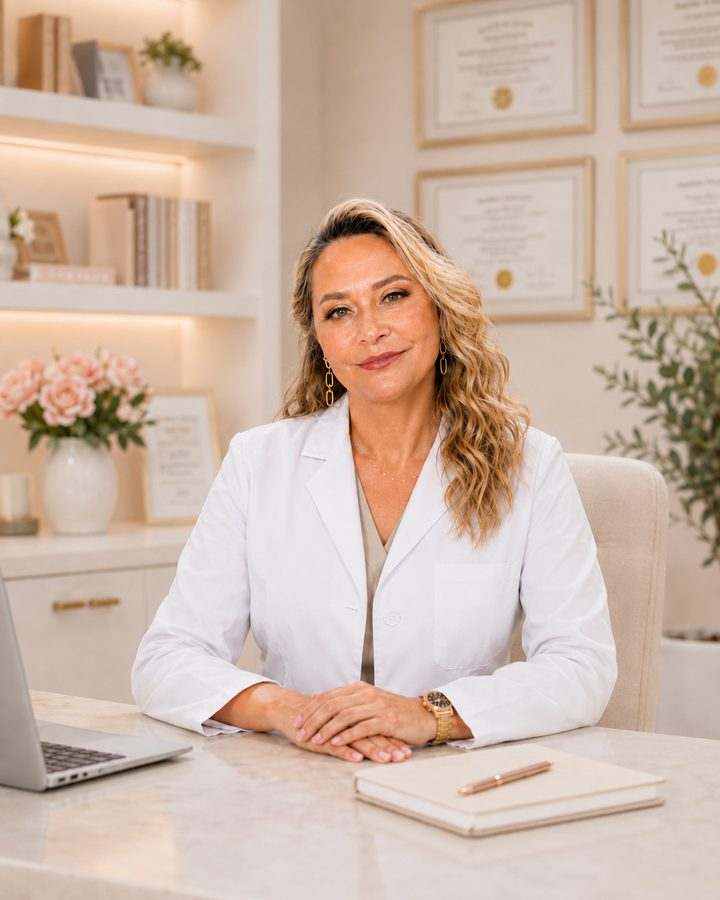
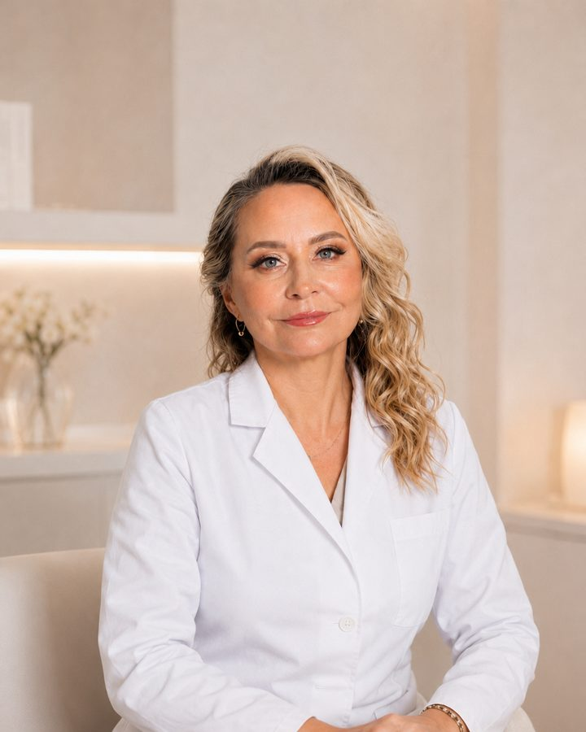

Эндокринолог онлайн: консультация врача с 40-летним опытом
Гузаирова Гульназ Рауфовна — врач-эндокринолог и терапевт. Онлайн-консультация эндокринолога проходит дистанционно, из любого города России: щитовидная железа (гипотиреоз, тиреотоксикоз, узловые образования), лишний вес и инсулинорезистентность, сахарный диабет и преддиабет, менопауза, хроническая усталость. После приёма вы получаете понятное объяснение анализов и письменный план рекомендаций.

Гульназ Рауфовнаврач-эндокринолог
С какими вопросами можно обратиться
Снижение веса
Избыточный вес, ожирение, инсулинорезистентность и возможность сопровождения.
Щитовидная железа
Гипотиреоз, тиреотоксикоз, узловые образования и оценка терапии.
Диабет и преддиабет
Нарушения углеводного обмена и профилактика осложнений.
Менопауза
Приливы, нарушения сна, изменение веса и оценка дальнейшей тактики.
Хроническая усталость
Слабость, сонливость, снижение работоспособности и дефицитные состояния.
Anti-age и долголетие
Сохранение энергии, мышечной массы, памяти и качества жизни.
Подготовка к беременности
Гормональный статус, щитовидная железа и эндокринные риски.
Второе мнение
Разбор вашего случая с объяснением на понятном языке.
40 лет врачебной практики и системный подход к здоровью
Гузаирова Гульназ Рауфовна — врач-эндокринолог и терапевт с 40-летним опытом работы. Более 22 лет руководила медицинским центром, сочетая клиническую практику с организацией комплексной медицинской помощи.
На консультации рассматривается не отдельный анализ или симптом, а состояние человека в целом: жалобы, образ жизни, питание, принимаемые препараты, результаты обследований и сопутствующие заболевания.

Прочное образование. Многолетний опыт. Постоянное развитие.
Классическая медицинская школа и современные международные подходы к сохранению здоровья и качества жизни.
лет врачебной практики
Медицинское образование
Башкирский государственный медицинский институтЛечебный факультет
«Лечебное дело»
Диплом с отличием
UPEC, Франция
Université Paris-Est CréteilПрофилактическая и anti-age-медицина
2019–2020
Дополнительная подготовка
Европейский университет долголетияНутрициология
«Ментальное здоровье»
Понятно, последовательно и без спешки
Консультация строится вокруг вашей истории, жалоб, анализов и целей.
Запись
Вы выбираете услугу и оставляете заявку через Telegram-бот или форму.
Подготовка
Заполняете анкету и заранее отправляете имеющиеся обследования.
Онлайн-консультация
Подробный разбор истории, жалоб, обследований и образа жизни.
Письменный план
Получаете последовательные рекомендации и дальнейшие шаги.
Выберите подходящий формат
Первичная консультация
Подробный разбор ситуации и конкретный план дальнейших действий.
- жалобы и история заболевания
- анализы и обследования
- эндокринная система и обмен веществ
- питание, активность и препараты
- письменный план рекомендаций
Повторная консультация
Оценка динамики, новые результаты и уточнение рекомендаций.
- разбор новых обследований
- оценка изменений
- коррекция плана наблюдения
- письменный протокол
Экспресс-консультация
Быстрая помощь по одному конкретному вопросу.
- расшифровка анализов
- один вопрос по рекомендациям
- второе мнение
- выбор обследований
Что подготовить к консультации
Заранее подготовьте
Важно
Что говорят пациенты
«Подробно объясняет результаты анализов и назначает только необходимые обследования — без лишних затрат».ПроДокторов · ноябрь 2024
«Внимательно выслушивает, учитывает сопутствующие заболевания и остаётся на связи во время лечения».ПроДокторов · март 2022
«Не просто лечит симптомы, а старается определить причину и доступно объяснить дальнейшие действия».ПроДокторов · ноябрь 2022
«Профессиональный врач с большим опытом. После обследования и лечения удаётся добиться длительного улучшения».ПроДокторов · март 2022
Частые вопросы
Можно ли обратиться без готовых анализов?
Да. Необходимый объём обследования определяется индивидуально после разбора жалоб и истории.
В каком формате проходит консультация?
Только онлайн: по телефону, видеосвязи или через Telegram. Формат согласовывается заранее.
Что я получу после консультации?
Понятное объяснение ситуации, рекомендации по дальнейшим действиям, при необходимости перечень обследований и письменный план.
Чем повторная консультация отличается от первичной?
На первичной ситуация разбирается с нуля. Повторная нужна для оценки динамики, новых анализов и уточнения рекомендаций.
Для чего подходит экспресс-консультация?
Для одного конкретного вопроса. Если требуется сложный разбор или несколько вопросов, выбирайте первичную консультацию.
Можно ли получить второе мнение?
Да, по диагнозу, результатам обследований и ранее полученным рекомендациям.
Как записаться?
Через Telegram-бот или форму обратной связи для пользователей без Telegram.
Сколько стоит онлайн-консультация эндокринолога?
Первичная консультация эндокринолога онлайн — 7 000 рублей за 60 минут, повторная — 4 000 рублей за 40 минут, экспресс-формат по одному вопросу — 3 000 рублей за 20 минут. Полный перечень смотрите в разделе услуги и цены.
Из каких городов можно записаться на приём?
Консультация врача-эндокринолога проходит дистанционно, поэтому записаться можно из любого региона России и из-за рубежа. Нужен только интернет и спокойное место на время приёма.
Назначает ли врач лечение на онлайн-консультации?
Онлайн-консультация носит информационный характер: врач разбирает вашу ситуацию, объясняет результаты анализов и даёт письменные рекомендации по дальнейшим шагам. Постановка диагноза и назначение лечения требуют очного приёма.
Какие анализы нужны при проблемах со щитовидной железой?
Чаще всего это ТТГ, свободный Т4, антитела к ТПО и УЗИ щитовидной железы, но конкретный перечень определяется индивидуально. Если анализов ещё нет — это не препятствие для записи, необходимый объём обследования врач определит на приёме.
Чем эндокринолог может помочь при лишнем весе?
Врач исключает эндокринные причины набора веса — гипотиреоз, инсулинорезистентность, нарушения углеводного обмена, приём препаратов, влияющих на вес, — и выстраивает последовательный план: обследование, питание, активность и наблюдение за динамикой.
Как работает онлайн-консультация эндокринолога
Дистанционный формат появился не вместо привычного приёма, а рядом с ним. Он решает конкретную задачу: получить развёрнутое мнение опытного врача-эндокринолога тогда, когда в вашем городе нужного специалиста нет, запись к нему на месяцы вперёд или на очном приёме просто не хватает времени на разговор.
Кому подходит дистанционный приём
Онлайн-консультация эндокринолога уместна, если у вас на руках есть результаты анализов, а объяснений к ним нет; если назначенная терапия вызывает вопросы и хочется второго мнения; если вы годами наблюдаетесь по поводу гипотиреоза или узлов щитовидной железы и хотите понять, всё ли идёт правильно; если вес не снижается вопреки усилиям и есть подозрение на гормональную причину. Подробный перечень тем — в разделе направления работы.
Есть и обратная сторона, о которой честнее сказать сразу. Дистанционно невозможно провести осмотр, пальпировать щитовидную железу и оценить состояние в динамике так, как это делается очно. Поэтому онлайн-консультация — это разбор, объяснение и маршрут дальнейших действий, а не замена очного приёма врача. Если по итогам разговора нужен очный осмотр или срочная помощь, вам об этом скажут прямо.
Что происходит на приёме
Приём длится от 20 до 60 минут в зависимости от выбранного формата и строится вокруг вашей истории. Сначала разбираются жалобы и то, как они менялись со временем. Затем — уже сданные анализы и обследования: что каждый показатель означает, какие из них действительно важны в вашей ситуации, а какие сданы напрасно. Отдельно обсуждаются принимаемые препараты и дозировки, питание, режим сна и физическая активность, сопутствующие заболевания. В конце вы получаете последовательность шагов: что сделать в ближайшие недели, какие обследования имеют смысл, когда имеет смысл вернуться за повторной оценкой.
Отдельно стоит сказать про письменный план. Устно на приёме звучит много, запомнить всё невозможно, а через неделю рекомендации в памяти превращаются в общее ощущение. Поэтому после консультации формируется письменный документ с рекомендациями — к нему можно вернуться в любой момент и показать его лечащему врачу по месту жительства.
Щитовидная железа, вес и обмен веществ
Большая часть обращений связана с тремя группами вопросов. Первая — щитовидная железа: гипотиреоз и подбор дозы, тиреотоксикоз, узловые образования, аутоиммунный тиреоидит, изменения ТТГ при планировании беременности. Вторая — вес и углеводный обмен: ожирение, инсулинорезистентность, преддиабет и сахарный диабет 2 типа, когда важно не просто «сесть на диету», а понять причину и выстроить устойчивый режим. Третья — состояния, которые редко попадают в отдельную графу: хроническая усталость, дефициты витаминов и микроэлементов, период менопаузы, снижение работоспособности и качества сна.
Во всех трёх случаях подход один: не лечить отдельный анализ, а посмотреть на человека целиком. Показатель вне референса сам по себе ещё не диагноз, а нормальный анализ не отменяет жалоб. Об опыте и квалификации врача можно прочитать в разделах о враче и образование, а мнения пациентов — в разделе отзывы.
Как подготовиться и записаться
Подготовка занимает немного времени, но заметно повышает пользу от приёма: соберите результаты анализов и обследований за последние год-два, выпишите принимаемые препараты с дозировками, сформулируйте два-три главных вопроса, ради которых вы записываетесь. Документы удобно заранее прислать в Telegram, чтобы врач успел с ними ознакомиться до начала разговора. Если анализов нет совсем — записывайтесь, необходимый объём обследования определяется индивидуально.
Запись идёт через Telegram-бот, а для тех, у кого Telegram не установлен, работает форма заявки: администратор свяжется с вами ежедневно с 11:00 до 18:00 и согласует удобное время.
Запишитесь на онлайн-консультацию
Основной способ записи — Telegram-бот. Если Telegram нет, оставьте заявку через форму: будет подготовлено письмо администратору.
Запись через Telegram-бот
@DoctorGuzairovaBotВ боте можно посмотреть информацию, подготовку, стоимость и заполнить анкету.
Перейти в Telegram-ботКонсультация не может заменить очный прием врача.
Вся информация, полученная вами в ходе информационной консультации, носит рекомендательный характер.
После консультации я рекомендую Вам пройти очный осмотр.